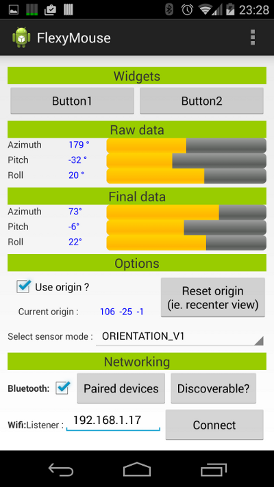
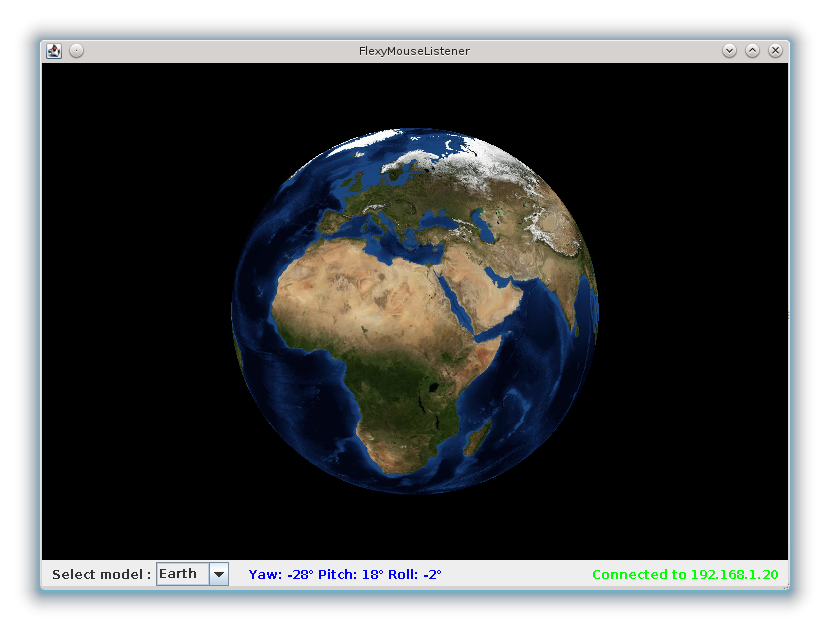

FlexyMouse let you use your phone (or tablet) as a wireless 3D controller.
The main idea is to use the sensor devices (such as the accelerometer or gyroscope) which are present on all descent smartphones to detect rotation in 3D space.
Widgets such as buttons, sliders or even trackpads could add extra controls but the key feature is to detect 3D rotation movements (ie. well kown as yaw, pitch, roll in aeronautics field).
The main use case is to use FlexyMouse as a controller in flight simulations (specially for helicopters simulation where all the 3 rotation axes need to be perfectly controlled) but at the end it could be used in other simulations or even in any games or software.
FlexyMouse will communicate with PC via Bluetooth, that way no special software will need to be installed on the target PC.
Android applicationRequirementsA smartphone or tablet with Android version 4.3 (API Level 18). DownloadThe application is not (yet) on the Google Play store so you have to download the following APK file and install it manually on your Android device. By default your Android device doesn't allow you to install APK files from unknown sources. To get rid of that you have to go to the Security section in Android settings and activate the Unknown sources checkbox Known issues
|
 |
Hmm not available (yet), sorry..
That component is optional, It's small application developed in Java for testing purpose. It listens events from a FlexyMouse device and rotate various 3D models.
Launch FlexyMouseListener with Java Web Start.
A PC with an installation of Java (6 or more)